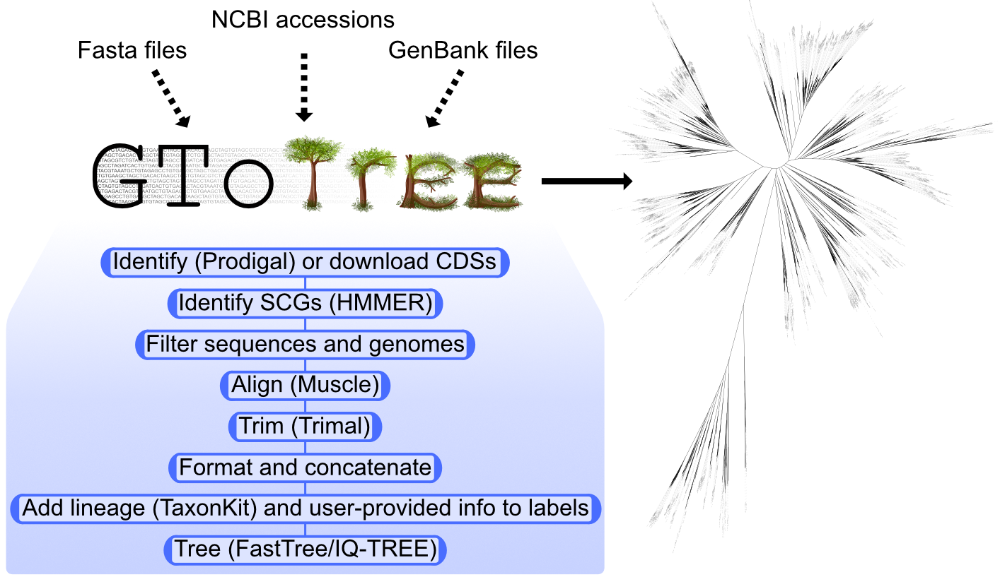

conda config --add envs_dirs /zfs/omics/projects/bioinformatics/software/miniconda3/envs/GToTree
Introduction
GToTree is a user-friendly workflow for phylogenomics intended to give more researchers the capability to easily create phylogenomic trees (Lee 2019). Documentation and examples can be found at the wiki here.

Installation
Installed on Crunchomics: Yes,
- GToTree v1.8.16 is installed as part of the bioinformatics share. If you have access to Crunchomics and have not yet access to the bioinformatics share, then you can send an email with your Uva netID to Nina Dombrowski, n.dombrowski@uva.nl.
- Afterwards, you can add the bioinformatics share as follows (if you have already done this in the past, you don’t need to run this command):
If you want to install it yourself, you can run:
mamba create -n gtotree_1.8.16 -c astrobiomike -c conda-forge -c bioconda gtotree=1.8.16Usage
Finding suitable reference genomes
There are many ways to find reference genomes to build a phylogeny. This is also discussed on the tools Wiki under the section Consider using “representative” genomes. Briefly, you can use NCBI’s esearch tool to pull genomes from NCBI. Additionally, GToTree provides the helper script gtt-get-accessions-from-GTDB that can be used as well.
In the example below, we want to place one Alteromonas genome that we have assembled into a backbone phylogeny of Alteromonas reference genomes to see where our new genome falls.
conda activate gtotree_1.8.16
# Set Alteromonas as target taxon and only count GTDB representatives (to reduce the number of genomes to add to the phylogeny)
gtt-get-accessions-from-GTDB -t Alteromonas --GTDB-representatives-only --get-taxon-count
# Download a file with the reference information
# In our case the file is called: GTDB-Alteromonas-genus-GTDB-rep-accs.txt
gtt-get-accessions-from-GTDB -t Alteromonas --GTDB-representatives-only- `-h`, `--help` show this help message and exit
- `-t TARGET_TAXON`, --target-taxon TARGET_TAXON
Target taxon (enter 'all' for all)
- `-r TARGET_RANK`, --target-rank TARGET_RANK
Target rank
- `--get-table` Provide just this flag alone to download and parse a GTDB metadata table. Archaea and
Bacteria tables pulled from here (https://data.gtdb.ecogenomic.org/releases/latest/) and
combined, and the GTDB taxonomy column is split for easier manual searching if wanted.
- `--get-rank-counts` Provide just this flag alone to see counts of how many unique taxa there are for each
rank.
- `--get-taxon-counts` Provide this flag along with a specified taxon to the `-t` flag to see how many of that
taxon are in the database.
- `--GTDB-representatives-only`
Provide this flag along with a specified taxon to the `-t` flag to pull accessions only
for genomes designated as GTDB species representatives (see e.g.:
https://gtdb.ecogenomic.org/faq#gtdb_species_clusters).
- `--RefSeq-representatives-only`
Provide this flag along with a specified taxon to the `-t` flag to pull accessions only
for genomes designated as RefSeq representative genomes (see e.g.:
https://www.ncbi.nlm.nih.gov/refseq/about/prokaryotes/#representative_genomes). (Useful
for subsetting a view across a broad level of diversity, see also `gtt-subset-GTDB-
accessions`.)
- `--do-not-check-GTDB-version`
By default, this program checks if it is using the latest version of the GTDB database.
Provide this flag to prevent this from occurring, using the version already present.
- `--store-GTDB-metadata-in-current-working-dir`
By default, GToTree uses a system-wide variable to know where to put and search the GTDB
metadata. Provide this flag to ignore that and store the master table in the current
working directory.
- `--use-ecogenomics` By default, we try to pull the data from
'https://data.ace.uq.edu.au/public/gtdb/data/releases/latest/' instead of
'https://data.gtdb.ecogenomic.org/releases/latest/'. Add this flag to try to pull from
the ecogenomics site (might be much slower depending on where you are).Running GToTree
# Store the path to our reference genome in a text file
ls results/faa/*faa > results/faa/aa_files.txt
# Run gtotree on your genome of interest an all Alteromonas reference genomes
GToTree \
-A results/faa/aa_files.txt \
-a GTDB-Alteromonas-genus-GTDB-rep-accs.txt \
-D -T IQ-TREE -j 10 \
-H Universal \
-o results/gtotreeUseful options:
------------------------------- REQUIRED INPUTS -------------------------------
1) Input genomes in one or any combination of the following formats:
- [-a <file>] single-column file of NCBI assembly accessions
- [-g <file>] single-column file with the paths to each GenBank file
- [-f <file>] single-column file with the paths to each fasta file
- [-A <file>] single-column file with the paths to each amino acid file,
each file should hold the coding sequences for just one genome
2) [-H <file>] location of the uncompressed target SCGs HMM file
being used, or just the HMM name if the 'GToTree_HMM_dir' env variable
is set to the appropriate location (which is done by conda install), run
'gtt-hmms' by itself to view the available gene-sets)
------------------------------- OPTIONAL INPUTS -------------------------------
Output directory specification:
- [-o <str>] default: GToTree_output
Specify the desired output directory.
User-specified modification of genome labels:
- [-m <file>] mapping file specifying desired genome labels
A two- or three-column tab-delimited file where column 1 holds either
the file name or NCBI accession of the genome to name (depending
on the input source), column 2 holds the desired new genome label,
and column 3 holds something to be appended to either initial or
modified labels (e.g. useful for "tagging" genomes in the tree based
on some characteristic). Columns 2 or 3 can be empty, and the file does
not need to include all input genomes.
Options for adding taxonomy information:
- [-t ] add NCBI taxonomy; default: false
Provide this flag with no arguments if you'd like to add NCBI taxonomy
info to the sequence headers for any genomes with NCBI taxids. This will
will largely be effective for input genomes provided as NCBI accessions
(provided to the `-a` argument), but any input GenBank files will also
be searched for an NCBI taxid. See `-L` argument for specifying desired
ranks.
- [-D ] add GTDB taxonomy; default: false
Provide this flag with no arguments if you'd like to add taxonomy from the
Genome Taxonomy Database (GTDB; gtdb.ecogenomic.org). This will only be
effective for input genomes provided as NCBI accessions (provided to the
`-a` argument). This can be used in combination with the `-t` flag, in
which case any input accessions not represented in the GTDB will have NCBI
taxonomic infomation added (with '_NCBI' appended). See `-L` argument for
specifying desired ranks, and see helper script `gtt-get-accessions-from-GTDB`
for help getting input accessions based on GTDB taxonomy searches.
- [-L <str>] specify wanted lineage ranks; default: Domain,Phylum,Class,Species,Strain
A comma-separated list of the taxonomic ranks you'd like added to
the labels if adding taxonomic information. E.g., all would be
"-L Domain,Phylum,Class,Order,Family,Genus,Species,Strain". Note that
strain-level information is available through NCBI, but not GTDB.
Filtering settings:
- [-c <float>] sequence length cutoff; default: 0.2
A float between 0-1 specifying the range about the median of
sequences to be retained. For example, if the median length of a
set of sequences is 100 AAs, those seqs longer than 120 or shorter
than 80 will be filtered out before alignment of that gene set
with the default 0.2 setting.
- [-G <float>] genome hits cutoff; default: 0.5
A float between 0-1 specifying the minimum fraction of hits a
genome must have of the SCG-set. For example, if there are 100
target genes in the HMM profile, and Genome X only has hits to 49
of them, it will be removed from analysis with default value 0.5.
- [-B ] best-hit mode; default: false
Provide this flag with no arguments if you'd like to run GToTree
in "best-hit" mode. By default, if a SCG has more than one hit
in a given genome, GToTree won't include a sequence for that target
from that genome in the final alignment. With this flag provided,
GToTree will use the best hit. See here for more discussion:
github.com/AstrobioMike/GToTree/wiki/things-to-consider
KO searching:
- [-K <file>] single-column file of KO targets to search each genome for
Table of hit counts, fastas of hit sequences, and files compatible
with the iToL web-based tree-viewer will be generated for each
target. See visualization of gene presence/absence example at
github.com/AstrobioMike/GToTree/wiki/example-usage for example.
Pfam searching:
- [-p <file>] single-column file of Pfam targets to search each genome for
Table of hit counts, fastas of hit sequences, and files compatible
with the iToL web-based tree-viewer will be generated for each
target. See visualization of gene presence/absence example at
github.com/AstrobioMike/GToTree/wiki/example-usage for example.
General run settings:
- [-z ] nucleotide mode; default: false
Make alignment and/or tree with nucleotide sequences instead of amino-acid
sequences. Note this mode can only accept NCBI accessions (passed to `-a`)
and genome fasta files (passed to `-f` as input sources. (GToTree still
finds target genes based on amino-acid HMM searches.)
- [-N ] do not make a tree; default: false
No tree. Generate alignment only.
- [-k ] keep individual target gene alignments; default: false
Keep individual alignment files.
- [-T <str>] tree program to use; default: FastTreeMP if available, FastTree if not
Which program to use for tree generation. Currently supported are
"FastTree", "FastTreeMP", and "IQ-TREE". As of now, these run with
default settings only (and IQ-TREE includes "-m MFP" and "-B 1000"). To
run either with more specific options (and there is a lot of room for
variation here), you can use the output alignment file from GToTree (and
the partitions file if wanted for mixed-model specification) as input into
a dedicated treeing program.
Note on FastTreeMP (http://www.microbesonline.org/fasttree/#OpenMP). FastTreeMP
parallelizes some steps of the treeing step. Currently, conda installs
FastTreeMP with FastTree on linux systems, but not on Mac OSX systems.
So if using the conda installation, you may not have FastTreeMP if on a Mac,
in which case FastTree will be used instead - this will be reported when the
program starts, and be in the log file.
- [-n <int> ] num cpus; default: 2
The number of cpus you'd like to use during the HMM search. (Given
these are individual small searches on single genomes, 2 is probably
always sufficient. Keep in mind this will be multiplied by the number of jobs
running concurrently if also modifying the `-j` parameter.)
- [-M <int> ] num muscle threads; default: 5
The number of threads muscle will use during alignment. (Keep in mind
this will be multiplied by the number of jobs running concurrently
if also modifying the `-j` parameter.)
- [-j ] num jobs; default: 1
The number of jobs you'd like to run in parallel during steps
that are parallelizable. This includes things like downloading input
accession genomes and running parallel alignments, and portions of the
tree step if using FastTree on a Linux system (e.g. see FastTree docs
here: http://www.microbesonline.org/fasttree/#OpenMP).
Note that I've occassionally noticed NCBI not being happy with over ~50
downloads being attempted concurrently. So if using a `-j` setting around
there or higher, and GToTree is saying a lot of input accessions were not
successfully downloaded, consider trying with fewer.
- [-X ] override super5 alignment; default: false
If working with greater than 1,000 target genomes, GToTree will by default
use the 'super5' muscle alignment algorithm to increase the speed of the alignments (see
github.com/AstrobioMike/GToTree/wiki/things-to-consider#working-with-many-genomes
for more details and the note just above there on using representative genomes).
Anyway, provide this flag with no arguments if you don't want to speed up
the alignments.
- [-P ] use http instead of ftp; default: false
Provide this flag with no arguments if your system can't use ftp,
and you'd like to try using http.
- [-F ] force overwrite; default: false
Provide this flag with no arguments if you'd like to force
overwriting the output directory if it exists.
- [-d ] debug mode; default: false
Provide this flag with no arguments if you'd like to keep the
temporary directory. (Mostly useful for debugging.)Important considerations
Caveats
Phylogenetics is an incredibly complicated and well-researched field, and things become even more complicated when working with many concatenated genes as is the case with phylogenomics. This workflow is great to get you started but only applies one alignment tool and gives limited options for adjusting the settings for tree constructions. When this example was run on the Alteromonas example discussed above, IQ-TREE ran a model selection step, which decided the best model to use was a insect-specific model. Since that is not what you want for a final analysis, always check the chosen model in the log file and
The above is one example for restricting the model selection to WAG, LG and JTT and additionally testing amino acid mixture models. There is no good answer what the best model for your research question is, however, to get an idea about models to use you can check what is commonly used by researchers in your field.
# Run IQ-TREE version 3.0.1 (part of the gtotree_1.8.16 conda environment)
srun --cpus-per-task 20 --mem=50G iqtree -s Aligned_SCGs_mod_names.faa \
-m MFP \
-mset WAG,LG,JTT \
-madd LG+C10,LG+C10+R+F,LG+C10+R,LG+C10+F \
--score-diff all \
-B 1000 -nt 20 \
-pre iqtree_v2Choosing marker genes
GToTree also needs to know which SCG-set to use – passed with the -H flag. There are 14 provided with the program.
| HMM set | Number of gene targets |
|---|---|
| Actinobacteria | 138 |
| Alphaproteobacteria | 117 |
| Archaea | 76 |
| Bacteria | 74 |
| Bacteria_and_Archaea | 25 |
| Bacteroidetes | 90 |
| Betaproteobacteria | 203 |
| Chlamydiae | 286 |
| Cyanobacteria | 251 |
| Epsilonproteobacteria | 260 |
| Firmicutes | 119 |
| Gammaproteobacteria | 172 |
| Proteobacteria | 119 |
| Tenericutes | 99 |
| Universal (Hug et al.) | 16 |
More information on each is provided in the “hmm-sources-and-info.tsv” file found here.
For general usage, the universal dataset by Hug et al. (2016) is a good starting point but you can also consider taxon-specific HMM sets.
References
Hug, Laura A., Brett J. Baker, Karthik Anantharaman, Christopher T. Brown, Alexander J. Probst, Cindy J. Castelle, Cristina N. Butterfield, et al. 2016. “A New View of the Tree of Life.” Nature Microbiology 1 (5). https://doi.org/10.1038/nmicrobiol.2016.48.
Lee, Michael D. 2019. “GToTree: A User-Friendly Workflow for Phylogenomics.” Edited by Yann Ponty. Bioinformatics 35 (20): 4162–64. https://doi.org/10.1093/bioinformatics/btz188.